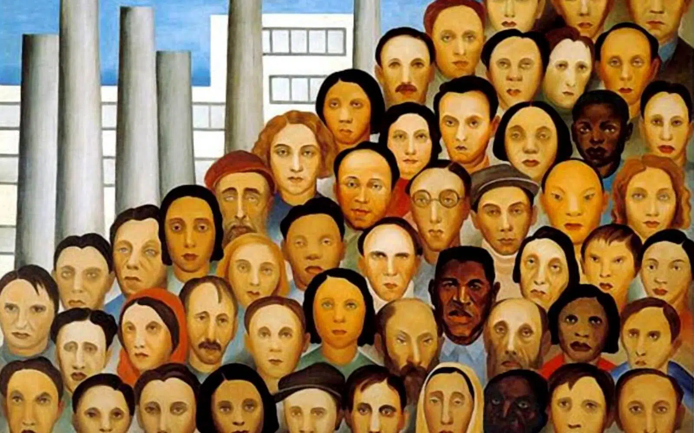

A arte moderna representa uma das mais significativas revoluções na história da expressão artística. Surgindo no final do século XIX e se estendendo até o século XX, esse movimento desafiou as convenções tradicionais e buscou novas formas de ver e interpretar o mundo. Com uma abordagem inovadora, artistas de diversas disciplinas começaram a explorar a subjetividade, a abstração e a experimentação.
A arte moderna se caracteriza pela quebra de paradigmas. Os artistas começaram a usar novas técnicas e materiais, abandonando a perspectiva e as formas realistas em favor de composições mais livres e expressivas. Movimentos como o Impressionismo, Cubismo, Surrealismo e Expressionismo são marcos desse período, cada um contribuindo com uma nova visão sobre a realidade e a experiência humana. Veja algumas obras de artistas notávies: